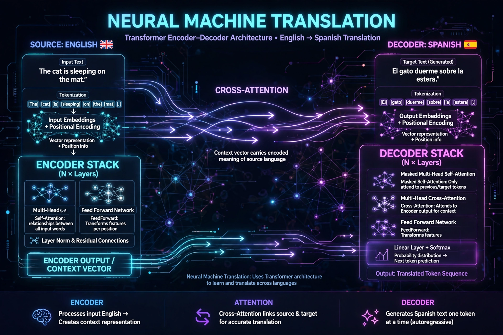

Neural machine translation (NMT) is an approach to machine translation that uses a large artificial neural network to predict the likelihood of a sequence of words, typically modelling entire sentences in a single integrated model.
NMT emerged in 2013–2014 with sequence-to-sequence learning by Kalchbrenner and Blunsom, Sutskever et al., and Cho et al., followed by Bahdanau attention (2015), which let the decoder focus on relevant source words. Google switched Google Translate to Google Neural Machine Translation (GNMT) in 2016, reporting large error reductions. The Transformer architecture (2017, "Attention Is All You Need") removed recurrence and became the standard.
An encoder converts a source sentence into representations; a decoder generates the target sentence word by word, conditioned on the source and previous output. Models are trained end-to-end on millions of parallel sentence pairs, learning embeddings and cross-lingual patterns without hand-written rules.
NMT produces far more fluent output than earlier phrase-based statistical MT, but can mistranslate rare words, omit content, hallucinate, and struggle with low-resource languages and long documents. Large language models have since extended translation quality and context.